Org Everywhere brings Emacs Org mode to VS Code: outlines that fold with Tab, TODOs and an agenda, tables that align themselves and work out their own formulas, links you follow with F12, a clock, capture, refiling, running code and exporting - and, with the orgs server, all of it across every org file you have.

Find what you need
- A key: Keys has the ones worth knowing; Every key binding lists them all, by where they work, with the macOS spelling beside each.
- A command: Commands lists every one, by subject, with what it does and its key.
- A setting: Settings.
- Anything: type in the search box at the top of this page - a key
(
ctrl+alt+o), a command (refile) or a word (formula). The arrow keys step through what it finds. - In VS Code:
Ctrl+Alt+O Mopens a menu of every org command, with the ones that fit where the cursor is first and each one's key beside it.
At a glance
| To | Press |
|---|---|
| Fold or unfold a heading | Tab on the heading |
| See the whole file's outline | Shift+Tab on a heading |
| Move a heading and what is under it | Alt+Up / Alt+Down |
| Cycle a TODO keyword | Alt+Left / Alt+Right |
| Go to the next table cell | Tab in a table |
| Follow a link | F12, or Ctrl+click |
| Insert a link | Ctrl+Alt+O K |
| Run the block, or table, under the cursor | Ctrl+Alt+O R |
| Refile a subtree | Ctrl+Alt+O W |
| Insert a timestamp | Ctrl+Alt+O . |
| Capture a thought from anywhere | Ctrl+Alt+O Q |
| Everything else | Ctrl+Alt+O M |
Getting started
Installing
Install Org Everywhere from a .vsix (Extensions view, ... menu, Install from
VSIX…) or build one: npm install && npx vsce package. Open any
.org file and it starts.
Then run Org: Open A Practice File, or the walkthrough (Help > Get Started, then Get started with Org Everywhere), which takes you through the essentials a step at a time.
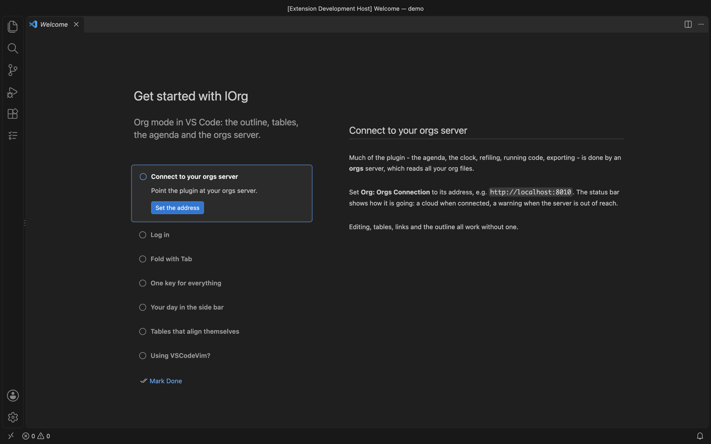
What works on its own, and what needs the orgs server
Editing works with nothing else: the outline, TODO keywords, tables (and their alignment, sorting and plotting), links, footnotes, completion, statistics cookies, the column view, narrowing and the decorations.
The orgs server reads all your org files and does what spans files or
runs things: the agenda, clocking, refile and archive, table formulas,
running source blocks, exporting, capture, habits, encryption,
attachments, history and search. It lives at
github.com/ihdavids/orgs; start it with orgs serve
in the directory with its orgs.yaml.
Connecting
Set Org: Orgs Connection (org.orgsConnection) to the server's address -
http://localhost:8010, or https://… for one with a certificate
(org.allowSelfSigned accepts a self-signed one).
A server that wants a login asks once, and the plugin keeps you logged in.
A server started with noAuth: true wants none: the plugin asks the server
when it starts (and whenever the address changes) and skips the login.
The status bar
In an org file, the left of the status bar says how the server is:
| Shows | Means |
|---|---|
| ☁ orgs | Connected |
| 👤 orgs: log in | The server wants a login |
| ⚠ orgs (highlighted) | The server is not answering |
Click it to log in or out, check again, open worg, or change the address.
It checks again every couple of minutes and when you come back to the
window. In a table it also shows the cell (@2$3) and its formula; on the
right, the running clock and any timer.
Using VSCodeVim
Everything works in insert mode. In normal mode Tab folds headings and
moves between table cells, and Alt+H/J/K/L move headings, rows and
columns. Org: Set Up Vim Table Keys adds <leader>t… mappings for the
table commands. See Keys.
Keys
One key to remember: Ctrl+Alt+O M opens a menu of everything, with what fits where the cursor is first and each item's key beside it.
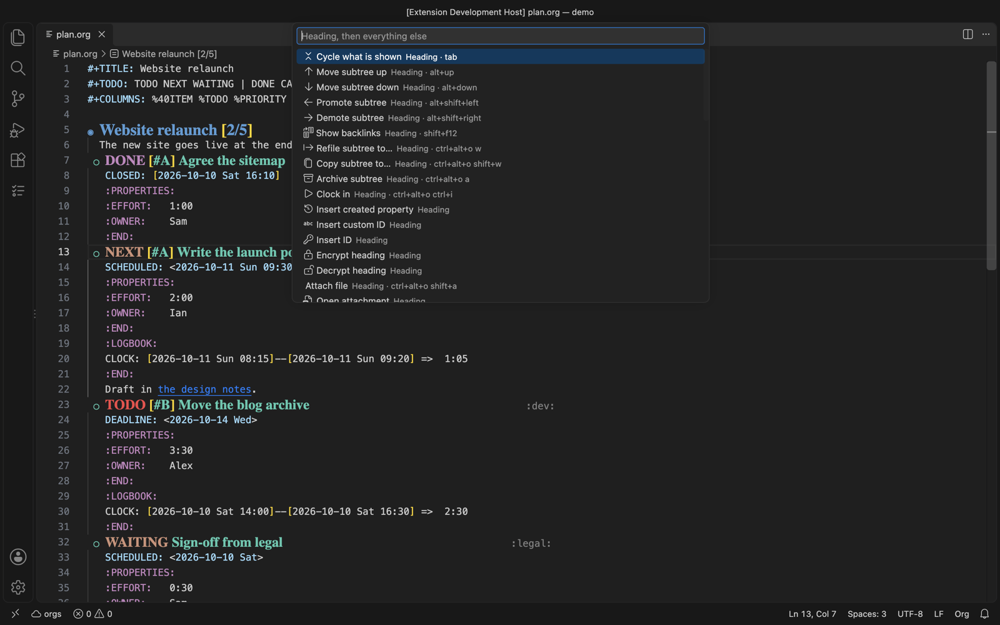
The keys that act on a table or a heading only take over on a table or heading line; everywhere else Tab, Enter and Alt+arrows are VS Code's. With VSCodeVim, everything here works in insert mode; the vim column is for normal mode.
Everywhere in an org file
| Key | Does | Vim normal |
|---|---|---|
| Ctrl+Alt+O M | The menu | |
| Ctrl+Alt+O R | Run what is at the cursor | |
| Ctrl+Alt+O O | Sort: table rows, a list, the headings under one | |
| Ctrl+Alt+O . | Insert a timestamp | |
| Ctrl+Alt+O K | Insert a link | |
| Ctrl+Alt+O Shift+K | Store a link to here | |
| Ctrl+Alt+O Shift+O | Open the link under the cursor | |
| F12 / Ctrl+click | Follow a link | gd |
| Shift+F12 | Links to this heading | gr |
| Ctrl+Alt+O W | Refile the subtree | |
| Ctrl+Alt+O Shift+W | Copy the subtree to… | |
| Ctrl+Alt+O A | Archive the subtree | |
| Ctrl+Alt+O E | Export the file | |
| Ctrl+Alt+O Shift+E | Export the subtree | |
| Ctrl+Alt+O Shift+A | Attach a file | |
| Ctrl+Alt+O Shift+F | Search this file | |
| Ctrl+Alt+O Ctrl+I | Clock in | |
| Ctrl+Alt+O Ctrl+O | Clock out | |
| Ctrl+Alt+O Shift+N | Narrow to the subtree | |
| Ctrl+Alt+O Shift+C | Column view | |
| Ctrl+Alt+O Ctrl+F | Insert a footnote / go between it and its note | |
| Alt+Left / Alt+Right | Cycle the TODO keyword, or step a date |
Anywhere in VS Code
| Key | Does |
|---|---|
| Ctrl+Alt+O F | Search every org file |
| Ctrl+Alt+O J | Go to the running clock |
| Ctrl+Alt+O N | New org file |
| Ctrl+Alt+O Q | Quick capture |
| Ctrl+Alt+O Shift+T | Start a timer (pomodoro) |
On a heading
| Key | Does | Vim normal |
|---|---|---|
| Tab | Fold, show children, show all | Tab |
| Shift+Tab | The whole file: overview, contents, all | Shift+Tab |
| Alt+Up / Alt+Down | Move the subtree | Alt+K / Alt+J |
| Alt+Shift+Left / Alt+Shift+Right | Promote / demote the subtree | Alt+H / Alt+L |
In a table
| Key | Does | Vim normal |
|---|---|---|
| Tab / Shift+Tab | Next / previous cell, aligning | Tab / Shift+Tab |
| Enter | Down a row, making one at the end | (vim's own Enter) |
| Shift+Enter | Copy the cell down | |
| Alt+arrows | Move the row or column | Alt+H/J/K/L |
| Alt+Shift+Down / Up | Insert a row / delete the row | Alt+Shift+J / Alt+Shift+K |
| Alt+Shift+Right / Left | Insert a column / delete the column | Alt+Shift+L / Alt+Shift+H |
| Ctrl+- | A rule below | |
| Ctrl+Alt+O Enter | A rule below, and on under it | |
| Ctrl+Alt+O = | Edit the cell's formula | |
| Ctrl+Alt+O Shift+R | Recalculate every table | |
| Ctrl+Alt+O G | Plot the table |
Set Up Vim Table Keys adds <leader>t… mappings for the table commands
(see Tables).
Every key binding
Every key the plugin binds, by where it works. The macOS column is the same
key written the Mac's way: Ctrl is ⌃, Alt is ⌥ (Option), Shift is ⇧.
Search for a key (ctrl+alt+o, tab) or for what you want to do.
Anywhere in VS Code
These work in any editor, org file or not.
| Key | macOS | Does | Command |
|---|---|---|---|
Ctrl+Alt+O F |
⌃⌥O F |
Search All Files | org.searchFiles |
Ctrl+Alt+O J |
⌃⌥O J |
Go To Running Clock | org.jumpToClock |
Ctrl+Alt+O N |
⌃⌥O N |
New File | org.newFile |
Ctrl+Alt+O Q |
⌃⌥O Q |
Quick Capture | org.quickCapture |
Ctrl+Alt+O Shift+T |
⌃⌥O ⇧T |
Start Timer | org.startTimer |
In an org file
These work anywhere in an org file.
| Key | macOS | Does | Command |
|---|---|---|---|
Alt+Left |
⌥← |
Previous Keyword Or Earlier Date | org.decrementContext |
Alt+Right |
⌥→ |
Next Keyword Or Later Date | org.incrementContext |
Ctrl+Alt+O . |
⌃⌥O . |
Insert Timestamp | org.insertTimestamp |
Ctrl+Alt+O = |
⌃⌥O = |
Edit Table Formula | org.editTableFormula |
Ctrl+Alt+O A |
⌃⌥O A |
Archive Subtree | org.archive |
Ctrl+Alt+O B |
⌃⌥O B |
Bold | org.bold |
Ctrl+Alt+O C |
⌃⌥O C |
Code | org.code |
Ctrl+Alt+O Ctrl+F |
⌃⌥O ⌃F |
Insert Footnote | org.insertFootnote |
Ctrl+Alt+O Ctrl+I |
⌃⌥O ⌃I |
Clock In | org.clockin |
Ctrl+Alt+O Ctrl+O |
⌃⌥O ⌃O |
Clock Out | org.clockout |
Ctrl+Alt+O Ctrl+U |
⌃⌥O ⌃U |
Update Clock Total On This Line | org.updateclock |
Ctrl+Alt+O D |
⌃⌥O D |
Demote Subtree | org.demoteSubtree |
Ctrl+Alt+O E |
⌃⌥O E |
Export File | org.export |
Ctrl+Alt+O G |
⌃⌥O G |
Plot Table | org.plotTable |
Ctrl+Alt+O H |
⌃⌥O H |
Insert Heading Respect Content | org.insertHeadingRespectContent |
Ctrl+Alt+O I |
⌃⌥O I |
Italic | org.italic |
Ctrl+Alt+O K |
⌃⌥O K |
Insert Link | org.insertLink |
Ctrl+Alt+O L |
⌃⌥O L |
Fixed Width Line | org.literal |
Ctrl+Alt+O M |
⌃⌥O M |
Menu | org.menu |
Ctrl+Alt+O O |
⌃⌥O O |
Sort | org.sort |
Ctrl+Alt+O P |
⌃⌥O P |
Promote Subtree | org.promoteSubtree |
Ctrl+Alt+O R |
⌃⌥O R |
Run At Cursor | org.run |
Ctrl+Alt+O S |
⌃⌥O S |
Insert Subheading | org.insertSubheading |
Ctrl+Alt+O Shift+A |
⌃⌥O ⇧A |
Attach File | org.attachFile |
Ctrl+Alt+O Shift+C |
⌃⌥O ⇧C |
Column View | org.columnView |
Ctrl+Alt+O Shift+D |
⌃⌥O ⇧D |
Demote Heading | org.doDemote |
Ctrl+Alt+O Shift+E |
⌃⌥O ⇧E |
Export Subtree | org.exportSubtree |
Ctrl+Alt+O Shift+F |
⌃⌥O ⇧F |
Search This File | org.searchThisFile |
Ctrl+Alt+O Shift+K |
⌃⌥O ⇧K |
Store Link | org.storeLink |
Ctrl+Alt+O Shift+N |
⌃⌥O ⇧N |
Narrow To Subtree | org.narrowToSubtree |
Ctrl+Alt+O Shift+O |
⌃⌥O ⇧O |
Open Link | org.openLink |
Ctrl+Alt+O Shift+P |
⌃⌥O ⇧P |
Promote Heading | org.doPromote |
Ctrl+Alt+O Shift+R |
⌃⌥O ⇧R |
Recalculate All Tables In File | org.execAllTables |
Ctrl+Alt+O Shift+W |
⌃⌥O ⇧W |
Copy Subtree To | org.copySubtree |
Ctrl+Alt+O T |
⌃⌥O T |
Timestamp | org.timestamp |
Ctrl+Alt+O U |
⌃⌥O U |
Underline | org.underline |
Ctrl+Alt+O V |
⌃⌥O V |
Verbatim | org.verbose |
Ctrl+Alt+O W |
⌃⌥O W |
Refile Subtree | org.refile |
Ctrl+Enter |
⌃↩ |
Do What I Mean | org.addDoWhatIMean |
Ctrl+O A T |
⌃O A T |
org.toggleDoWhatIMean | org.toggleDoWhatIMean |
Ctrl+Q Ctrl+F |
⌃Q ⌃F |
Align Table | org.formatUnderCursor |
Ctrl+Q Ctrl+Q |
⌃Q ⌃Q |
Enable Table Mode | org.tableModeOn |
Ctrl+Tab |
⌃⇥ |
Toggle Fold | org.tabHandler |
On a heading
These take over only with the cursor on a heading line; elsewhere the key does what it always does.
| Key | macOS | Does | Command |
|---|---|---|---|
Alt+Down |
⌥↓ |
Move Subtree Down | org.moveSubtreeDown |
Alt+Shift+Left |
⌥⇧← |
Promote Subtree | org.promoteSubtree |
Alt+Shift+Right |
⌥⇧→ |
Demote Subtree | org.demoteSubtree |
Alt+Up |
⌥↑ |
Move Subtree Up | org.moveSubtreeUp |
Shift+Tab |
⇧⇥ |
Cycle Global Visibility | org.globalCycle |
Tab |
⇥ |
Cycle Visibility | org.cycle |
In a table
These take over only with the cursor on a table line (Ctrl+Q Ctrl+Q turns them off and on).
| Key | macOS | Does | Command |
|---|---|---|---|
Alt+Down |
⌥↓ |
Move Table Row Down | org.moveRowDown |
Alt+Left |
⌥← |
Move Table Column Left | org.moveColLeft |
Alt+Right |
⌥→ |
Move Table Column Right | org.moveColRight |
Alt+Shift+Down |
⌥⇧↓ |
Insert Table Row Below | org.addRowDown |
Alt+Shift+Left |
⌥⇧← |
Delete Table Column | org.deleteCol |
Alt+Shift+Right |
⌥⇧→ |
Insert Table Column Right | org.addColRight |
Alt+Shift+Up |
⌥⇧↑ |
Delete Table Row | org.deleteRow |
Alt+Up |
⌥↑ |
Move Table Row Up | org.moveRowUp |
Ctrl+- |
⌃- |
Insert Table Rule | org.insertSeparator |
Ctrl+Alt+O Enter |
⌃⌥O ↩ |
Insert Table Rule And Move Below | org.insertSeparatorAndMove |
Ctrl+Q Ctrl+Q |
⌃Q ⌃Q |
Disable Table Mode | org.tableModeOff |
Ctrl+Q Space |
⌃Q Space |
Clear Table Cell | org.clearCell |
Enter |
↩ |
Table Next Row | org.nextRow |
Shift+Enter |
⇧↩ |
Copy Table Field Down | org.copyFieldDown |
Shift+Tab |
⇧⇥ |
Table Previous Cell | org.gotoPreviousCell |
Tab |
⇥ |
Table Next Cell | org.gotoNextCell |
In a table, vim normal mode
With VSCodeVim, in normal mode, on a table line. In insert mode the table keys work.
| Key | macOS | Does | Command |
|---|---|---|---|
Alt+H |
⌥H |
Move Table Column Left | org.moveColLeft |
Alt+H |
⌥H |
Promote Subtree | org.promoteSubtree |
Alt+J |
⌥J |
Move Table Row Down | org.moveRowDown |
Alt+J |
⌥J |
Move Subtree Down | org.moveSubtreeDown |
Alt+K |
⌥K |
Move Table Row Up | org.moveRowUp |
Alt+K |
⌥K |
Move Subtree Up | org.moveSubtreeUp |
Alt+L |
⌥L |
Move Table Column Right | org.moveColRight |
Alt+L |
⌥L |
Demote Subtree | org.demoteSubtree |
Alt+Shift+H |
⌥⇧H |
Delete Table Column | org.deleteCol |
Alt+Shift+J |
⌥⇧J |
Insert Table Row Below | org.addRowDown |
Alt+Shift+K |
⌥⇧K |
Delete Table Row | org.deleteRow |
Alt+Shift+L |
⌥⇧L |
Insert Table Column Right | org.addColRight |
In the calendar
In the date picker the timestamp commands open.
| Key | macOS | Does | Command |
|---|---|---|---|
, |
, |
org.calendar.prevDate | org.calendar.prevDate |
. |
. |
org.calendar.nextDate | org.calendar.nextDate |
< |
< |
org.calendar.prevWeek | org.calendar.prevWeek |
> |
> |
org.calendar.nextWeek | org.calendar.nextWeek |
Enter |
↩ |
org.calendar.setDate | org.calendar.setDate |
Esc |
Esc |
workbench.action.closeActiveEditor | workbench.action.closeActiveEditor |
In a TODO list
In a TODO list opened with Org: Todo View.
| Key | macOS | Does | Command |
|---|---|---|---|
E |
E |
org.todo.effort | org.todo.effort |
Enter |
↩ |
org.todo.goto | org.todo.goto |
F3 |
F3 |
org.todo.filter | org.todo.filter |
On a capture page
On the page Org: Capture opens.
| Key | macOS | Does | Command |
|---|---|---|---|
Ctrl+Alt+Q |
⌃⌥Q |
org.capture.escape | org.capture.escape |
Ctrl+Alt+W |
⌃⌥W |
org.capture.close | org.capture.close |
The outline
Headings are the shape of an org file. These keys work on the heading the cursor is on; they only take over on a heading line, so elsewhere Tab and Alt+Up do what they always do.
Showing and hiding
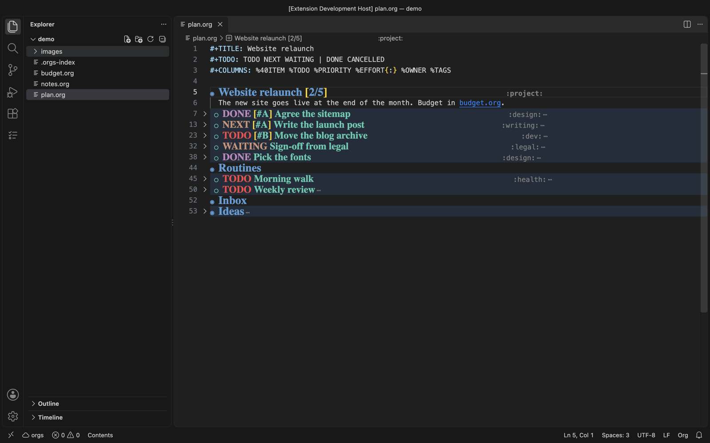
| Key | Does |
|---|---|
| Tab | On a heading: folded, then its children, then everything under it |
| Shift+Tab | On a heading: the whole file - top headings, then every heading, then all |
Drawers (:PROPERTIES:, :LOGBOOK:) stay folded as you open things up,
as org keeps them. VS Code's own folding keys work too (and za, zc,
zo in vim).
Moving and reshaping
| Key | Does |
|---|---|
| Alt+Up / Alt+Down | Move the subtree past the heading before or after it |
| Alt+Shift+Left / Alt+Shift+Right | Promote or demote the subtree |
| Alt+Left / Alt+Right | Cycle the TODO keyword, or step a date under the cursor |
A subtree moves with everything under it; blank lines stay where they were in the layout, so the spacing between entries does not change.
Sorting
Sort (Ctrl+Alt+O O) sorts whatever the cursor is in:
- on or under a heading: the headings under it - alphabetically, by TODO state (in your keyword order), by priority, by scheduled or deadline date, or numerically. The text above the first child stays put.
- in a list: its items, with the lines under each, alphabetically, numerically, or checked/unchecked first. A numbered list is numbered again.
- in a table: its rows by the cursor's column (see Tables).
With vim
In normal mode Tab and Shift+Tab cycle as above, and on a heading:
| Key | Does |
|---|---|
| Alt+K / Alt+J | Move the subtree up / down |
| Alt+H / Alt+L | Promote / demote the subtree |
Narrowing
Narrow To Subtree (Ctrl+Alt+O Shift+N) opens the subtree the cursor is in
in a tab of its own - org's C-x n s. It is an org document like any
other: tables, links and completion all work. Saving it writes the
subtree back into its file and saves the file; changes made to the file
show up in it. Close the tab to widen. (Commands that go through the orgs
server - refile, clock, run - work from the whole file.)

Statistics cookies
Put [/] or [%] on a heading and it keeps count: [2/5], [40%]. It
counts the keywords of the headings directly under it (how many are
done), or, with none of those, the checkboxes in its own entry. It
updates as you change a keyword or tick a box, in the same undo step.
org.autoStatistics turns it off; Update Statistics Cookies does it by
hand.
Tables
Type a table the way you would write one by hand and press Tab: it is aligned and the cursor moves on.
|Item|Qty|Price Tab | Item | Qty | Price | |- ===> |-------+-----+-------| |apple|3|1.50 | apple | 3 | 1.50 |
Columns that are mostly numbers line up on the right, as org has them. Link markup that the editor hides does not count towards a column's width.
Moving about
| Key | Does |
|---|---|
| Tab | Align and go to the next cell; past the last cell, a new row |
| Shift+Tab | Align and go to the previous cell |
| Enter | Down a row in the same column; a new row over a rule or at the end |
| Shift+Enter | Copy the cell down (an empty cell takes the one above); numbers count up |
Tab on a line typed as |- turns it into a full rule.
Changing the shape
| Key | Does |
|---|---|
| Alt+Up / Alt+Down | Move the row |
| Alt+Left / Alt+Right | Move the column |
| Alt+Shift+Down | Insert a row below |
| Alt+Shift+Up | Delete the row |
| Alt+Shift+Right | Insert a column to the right |
| Alt+Shift+Left | Delete the column |
| Ctrl+- | A rule under the row |
| Ctrl+Alt+O Enter | A rule under the row, and on below it |
| Ctrl+Q Ctrl+F | Align |
| Ctrl+Q Space | Clear the cell |
| Ctrl+Q Ctrl+Q | Turn table keys off (and on again) |
Everything else is in the table menu, Ctrl+Alt+O M: split a cell onto a new row, join the row below, sort, transpose, sum a column, plot, import, and more. Type to filter it.
Alignment and width cookies
A row of cookies sets how each column sits and how wide it shows:
| <c> | <r> | <12> | | Name | Age | Notes |
<l>, <r> and <c> align a column. <N> shows the column N
characters wide: what does not fit is hidden and ends in an ellipsis,
until the cursor is in the cell. <r8> does both.
Formulas
Formulas live on the #+TBLFM: line under the table and are worked out
by the orgs server. Recalculating sends the table as it reads in the
editor - unsaved changes too - and puts the answer back, so it is one undo
and needs no save.

| Key | Does |
|---|---|
| Ctrl+Alt+O R | Recalculate the table |
| Ctrl+Alt+O Shift+R | Recalculate every table in the file |
| Ctrl+Alt+O = | Edit the formula for the cell under the cursor |
- With the cursor in a cell, the status bar shows the cell's reference
(
@3$2) and the formula that fills it; hovering shows it too. The cells that formula writes are outlined. - Type
$1*2after an=in a cell ($1*2) and press Tab: it becomes a formula for the whole column. =:=makes one for that cell alone. highlight($3, "red"),red($3),green($3)… andgradient($2, $2, "red", "yellow", "green")colour the cells they fill after a recalculation. The colours go when the table is next changed.org.tableAutoRecalc:"marked"(the default) recalculates when Tab or Enter leaves a row with#in its first column, as org does;"always"on every Tab and Enter;"off"only when asked.org.tableRecalcOnSaverecalculates every table when the file is saved.
Recalculating needs a reachable orgs server you are logged in to.
Making tables
- Create Table: a header, a rule and empty rows, sized as you ask.
- Convert Selection To Table: the selection, or the paragraph the cursor is in, split on tabs, commas, semicolons or runs of spaces. A first row of words over rows of numbers gets a rule under it.
- Paste As Table and Import CSV As Table do the same with the clipboard or a file.
Finding tables
- Go To Table lists every table the orgs server knows, with its name, heading, size and formula count (this file's tables without a server).
- Insert Table Name inserts a
#+NAME:forremote(name, @2$3).
Sorting, turning, adding up
- Sort Table Rows (Ctrl+Alt+O O) sorts the rows between the rules around the cursor by its column: alphabetical, numeric or by date, either way. The likely one is offered first.
- Transpose Table turns rows into columns.
- Sum Table Column adds up the column (or the selected rows of it) and
copies the total. Times like
1:30add up as times.
Plotting
Plot Table (Ctrl+Alt+O G) opens a chart beside the editor that follows the table as you edit it. Without anything else, the first column of words is the x axis and the columns of numbers are the series: words give bars, numbers and dates give lines, and times plot as hours. An org-plot line above the table says otherwise:
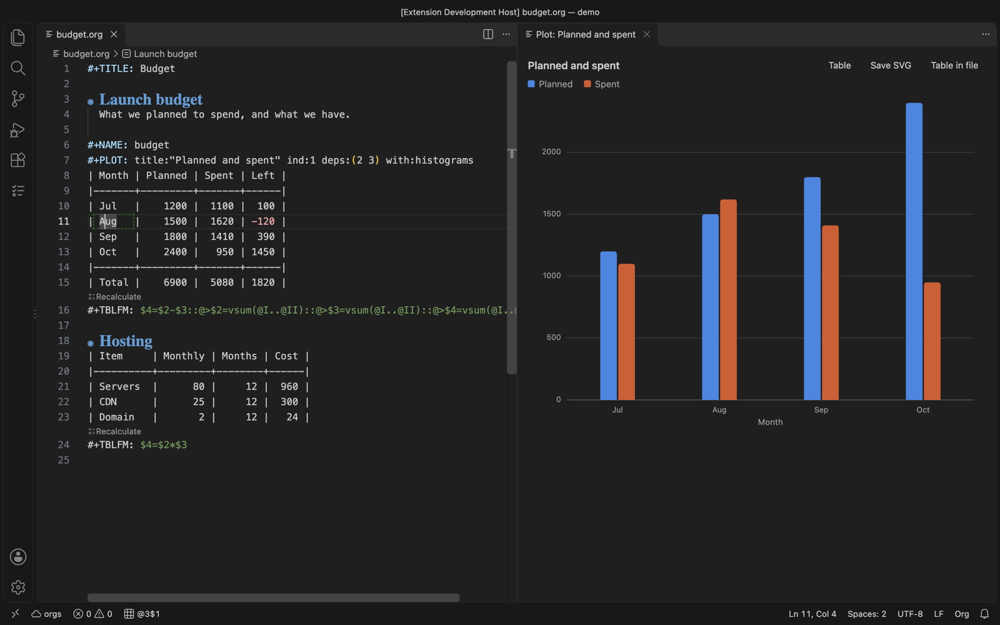
#+PLOT: title:"Sales" ind:1 deps:(2 3) with:histograms
with:lines, points and histograms pick lines, dots and bars. The
chart has a table view and saves as svg.
Vim
The table keys work with VSCodeVim. In insert mode everything above works as it does without vim. In normal mode Tab and Shift+Tab move between cells, Enter keeps its vim meaning, and:
| Key | Does |
|---|---|
| Alt+H / J / K / L | Move the column left, the row down or up, the column right |
| Alt+Shift+J / Alt+Shift+K | Insert a row below / delete the row |
| Alt+Shift+L / Alt+Shift+H | Insert a column right / delete the column |
Set Up Vim Table Keys adds leader mappings to your vim settings:
<leader>tt opens the table menu, <leader>tr recalculates,
<leader>t= edits a formula, <leader>ts sorts, <leader>t- adds a
rule, <leader>to / <leader>tO add a row below / above,
<leader>td deletes a row, <leader>ti / <leader>tx add / delete a
column, <leader>tp plots and <leader>tc converts to a table. Keys
you have already mapped are left alone.
Links
Links are VS Code's own navigation. Nothing new to learn: the keys you use for code work on links.

| Key | Does |
|---|---|
F12, Ctrl+click (gd in vim) |
Follow the link under the cursor |
Shift+F12 (gr in vim) |
On a heading: every link to it, from every org file |
| Hover | An image link shows the picture; a link to a heading shows the heading |
| Ctrl+Alt+O K | Insert a link |
| Ctrl+Alt+O Shift+K | Store a link to where you are |
| Ctrl+Alt+O Shift+O | Open the link under the cursor (urls in the browser) |
What links point at
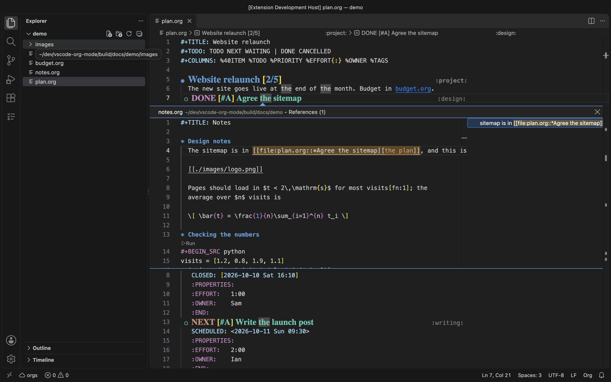
| Link | Goes to |
|---|---|
[[*Heading]] |
The heading with that title in this file |
[[#custom-id]] |
The heading with that :CUSTOM_ID: |
[[id:5f2c…]] |
The heading with that :ID:, in any file |
[[file:notes.org]] |
Another file |
[[file:notes.org::*Heading]] |
A heading in another file (also ::#id, ::42 for a line) |
[[target]] |
A <<target>>, else a heading of that name, else the text |
[[https://…]], mailto: |
Opened outside VS Code |
[[./pics/cat.png]] |
An image: hover to see it |
An id: that is not in the workspace is asked of the orgs server.
Making links
Insert Link offers every heading in the workspace - this file's first -
plus "a web address…" and "a file…". Type to find a heading anywhere.
It links by :ID: when the heading has one, by :CUSTOM_ID: next, by
title otherwise, and asks for a description (empty for none). With text
selected, that text is the description.
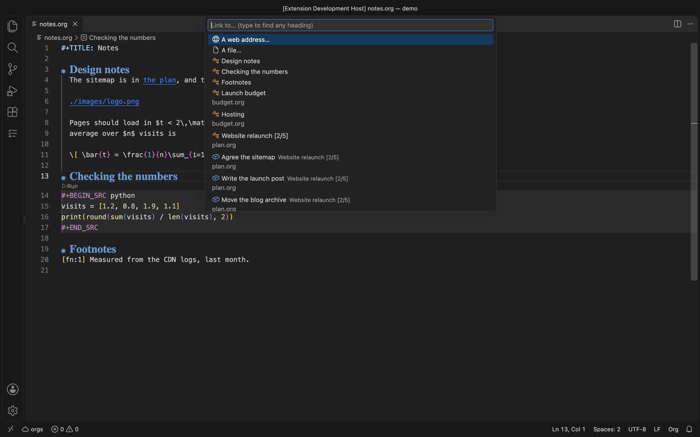
Store Link remembers the heading you are under; Insert Link then offers it first, from any file, with the right relative path. The link also goes on the clipboard.
Typing [[ offers the headings, custom ids and targets of this file and
the workspace's other org files (see Completion).
For a link that survives the heading being renamed or moved, give it an ID first: Insert ID (see Dates and properties).
Completion
Suggestions come up as you type, from this file first, then the workspace, then the orgs server (every tag and property it knows) when you are logged in.

| Where you type | You are offered |
|---|---|
| after the stars of a heading | TODO keywords - yours, and the file's #+TODO: |
after a : at the end of a heading |
Tags, the ones used most first; pick one and the next is offered |
#+ at the start of a line |
Keywords; BEGIN_SRC, BEGIN_QUOTE… come with their #+END |
after #+BEGIN_SRC |
Languages, the ones this file uses first |
: in a :PROPERTIES: drawer |
Property names |
after :NAME: in a drawer |
That property's values, from everywhere |
after [[ |
Headings, custom ids and targets, and other org files |
Lower case #+begin_src gives lower case keywords.
Dates and properties
Timestamps
Insert Timestamp (Ctrl+Alt+O .) offers, in one list:

| Choice | Inserts |
|---|---|
| today | <2026-10-11 Sun> - shows in the agenda |
| now | <2026-10-11 Sun 14:05> |
| today, inactive | [2026-10-11 Sun] - a note of when, kept out of the agenda |
| now, inactive | [2026-10-11 Sun 14:05] |
| Pick a date… | From the calendar |
| Schedule… / Deadline… | SCHEDULED: or DEADLINE: on the heading, from the calendar |
With the cursor on a date, Alt+Left and Alt+Right step it a day.
Properties
These go in the heading's :PROPERTIES: drawer, which is made (under any
SCHEDULED: line, as org has it) when there is none:
| Command | Adds |
|---|---|
| Insert Created Property | :CREATED: [2026-10-11 Sun 14:05], if it is not there already |
| Insert Custom ID | :CUSTOM_ID: made from the title, unique in the file - for [[#id]] links and html anchors |
| Insert ID | :ID: a uuid - [[id:…]] links find the heading wherever it moves |
Typing : in a drawer offers property names, and their values after them
(see Completion).
Footnotes

| Key / command | Does |
|---|---|
| Ctrl+Alt+O Ctrl+F | Insert the next numbered footnote, and go and write it. On a footnote: go between it and its definition |
F12 (gd) on [fn:1] |
Go to the definition |
Shift+F12 (gr) |
Every reference to the footnote |
| Hover | The note's text |
Type [fn: |
The labels in use, with the start of each note |
A new footnote's definition goes at the end of the * Footnotes heading,
which is made at the end of the file when there is none. Inline notes
([fn:label:the text]) and anonymous ones ([fn::the text]) show on
hover too.
Column view
Column View (Ctrl+Alt+O Shift+C) shows the file's headings as rows and their keyword, priority, properties and tags as columns, beside the editor - and you can edit any cell.
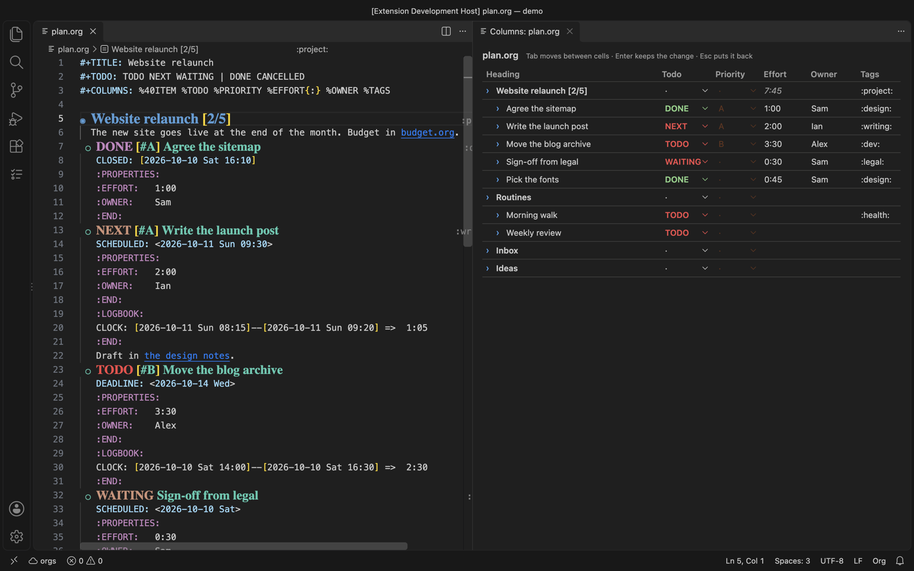
-
The columns are the file's
#+COLUMNS:line's:#+COLUMNS: %40ITEM %TODO %PRIORITY %EFFORT(Estimate){:} %OWNER %TAGSWithout one: heading, state, priority, effort, the properties the file uses most, and tags.
- A column summed with
{:}(times like1:30) or{+}(numbers) shows each heading the total of the headings under it, in grey where the heading has no value of its own. Effort is summed by default. - Tab moves between cells; Enter (or leaving the cell) keeps a change, Escape puts it back. State and priority are lists to pick from. Emptying a property cell takes the property out.
- The › beside a heading goes to it.
Edits go straight into the document - one undo each, no server needed - and the view follows the org file you are in.
Previews and panels
Web page and slides
Show Web, Show Reveal JS and Show Impress JS preview the file the way
the orgs server exports it, beside the editor. The preview follows the
org file you are in, as Markdown's preview does, and redraws when you
save - keeping where you had scrolled to. Press s in it to save the page
as html. See Exporting to write the files instead.

Gantt chart and mind map
Show Gantt and Show Mind Map draw the headings a query finds: one of the
named queries in org.gantts, or one you type. They redraw when an org
file is saved. Worg has fuller versions (Show Gantt Chart, Show Mind
Map).
Pictures and maths
Show Pictures And Maths opens a panel that follows the subtree the cursor
is in and shows its linked images and its LaTeX - $e=mc^2$, \(…\),
\[…\], $$…$$ and \begin{equation}… - typeset with KaTeX. Click one to
go to it. VS Code cannot draw pictures inside the text; this is the next
best thing. (Hovering an image link shows it too - see Links.)
The maths needs a network connection the first time, to fetch KaTeX.
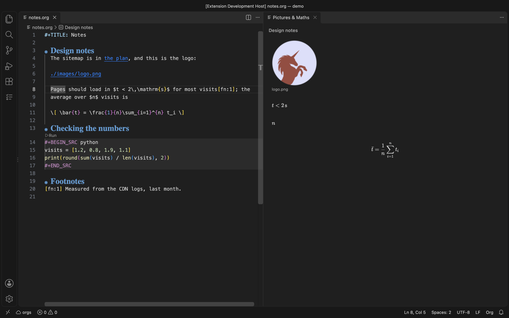
Column view
See Column view.
The agenda
The Org icon in the activity bar opens the agenda: today, and the days
after it (org.agendaDays, a week by default), from the orgs server.
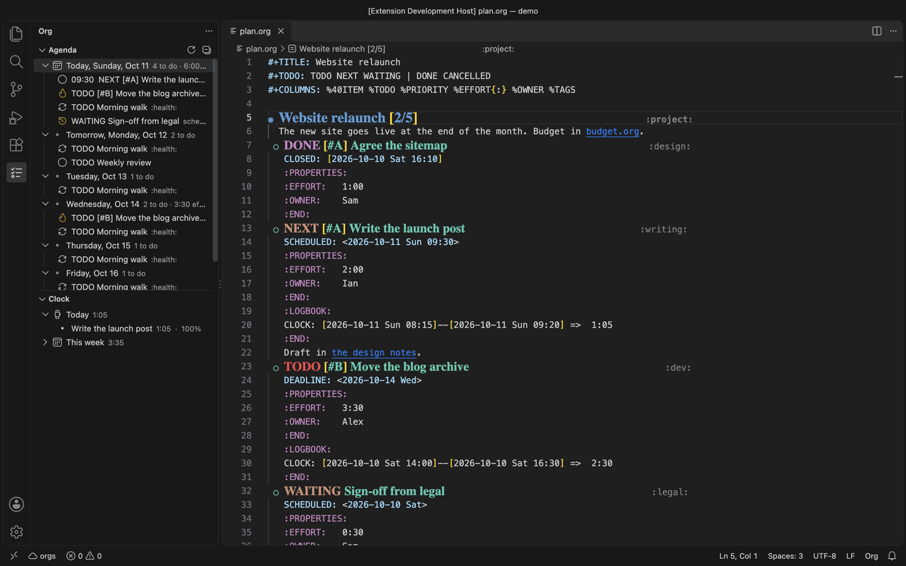
- Today carries what is overdue, as org's agenda does: a scheduled task not done shows as "scheduled 2d ago", a deadline coming up as "due in 3d", one gone by in red.
- Each entry shows its time, keyword, priority, title, effort and tags. Hover for the headings above it and its file.
- Each day says how much there is to do, and the effort it adds up to.
- Days after today with nothing on them are left out.
Acting on an entry
| Do | To |
|---|---|
| Click it | Go to it |
| The ✓ button on it | Mark it done |
| The ▶ button on it | Clock in on it |
| Right-click (Shift+F10) | Change state…, Set priority…, Set effort…, Reschedule…, Clock in |
Reschedule offers today, tomorrow, next Monday, a week from now, or a date you type. The server makes each change in the file, so the agenda and the file always agree; the agenda refreshes itself when you save an org file, every few minutes, and with its refresh button.
The keyboard works throughout: arrows to move, Enter to go to an entry, Shift+F10 for its menu.
The full agenda - weeks, filters, the timeline - is worg's: Show Agenda.
Clocking
The orgs server keeps the clock: one runs at a time, wherever you started
it - here, in worg, or on the command line - and the time goes in the
heading's :LOGBOOK: drawer.
| Key / command | Does |
|---|---|
| Ctrl+Alt+O Ctrl+I | Clock in on the heading the cursor is under (clocking out of any other) |
| Ctrl+Alt+O Ctrl+O | Clock out |
| Ctrl+Alt+O J | Go to the heading the clock is running on |
| Update All Clock Totals | Work out every CLOCK: line's total in the file again |
| Ctrl+Alt+O Ctrl+U | The same for the line under the cursor |
While the clock runs, the status bar shows how long and on what -
⏱ 0:42 Write the report - and a click takes you there. It notices a clock
started or stopped elsewhere within a couple of minutes.
A clocked heading reads:
** Write the report
:LOGBOOK:
CLOCK: [2026-10-11 Sun 15:38]--[2026-10-11 Sun 16:20] => 0:42
:END:
The drawer is set on the server (clockIntoDrawer, LOGBOOK by default).
Where the time went
The Clock view, under the agenda in the Org side bar, lists today's and this week's clocked time by heading - most first, with each one's share. Click a heading to go to it.
A focus timer
Start Timer (Ctrl+Alt+O Shift+T) runs a pomodoro (25 minutes), a long
one (50), or a time of your own, in the status bar. Started under a
heading, it clocks in there and out again when the time is up
(org.pomodoroClocks turns that off); then it offers a 5 or 15 minute
break, or another round on the same heading. Click it to pause, add five
minutes or stop.
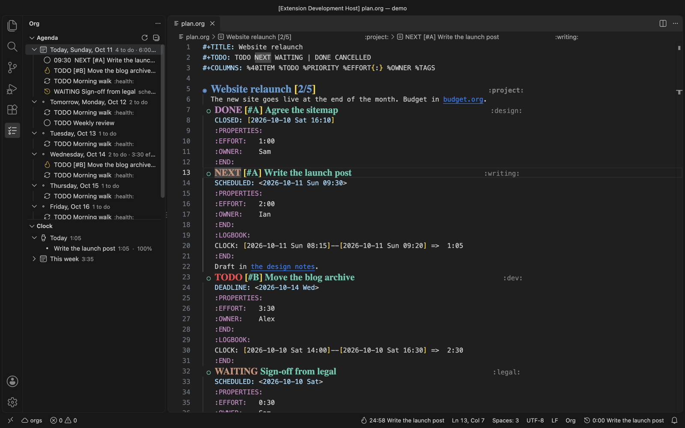
The clocktable
A clocktable is a dynamic block that sums the clocked time:
#+BEGIN: clocktable :scope file :maxlevel 3
#+END:Put the cursor in it and Run (Ctrl+Alt+O R), or click its Update link (see Running code).
Running code
One key runs whatever the cursor is on: Ctrl+Alt+O R.
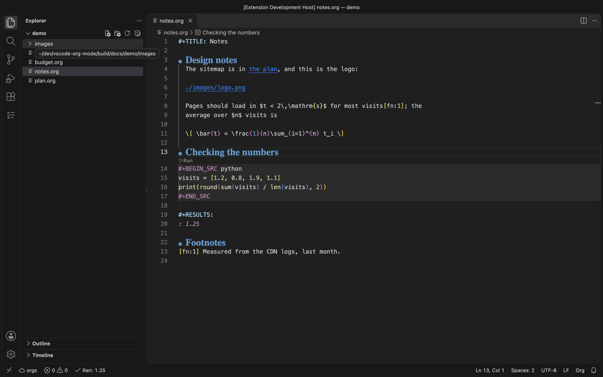
| The cursor is in | Run does |
|---|---|
a table, or its #+TBLFM: line |
Recalculates it (see Tables) |
a #+BEGIN_SRC block |
Runs it and writes #+RESULTS: under it |
a #+CALL: line |
Runs the named block it calls |
a line with src_python{…} or call_x() |
Runs the inline code, results after it |
a #+BEGIN: dynamic block |
Refreshes it (a clocktable, a column view…) |
Small Run, Update and Recalculate links sit above blocks, calls and
formula lines; click them instead. org.blockCodeLens turns them off.
| Command | Does |
|---|---|
| Run All Blocks In File | Every block, call and inline code, top to bottom |
| Update All Dynamic Blocks | Every #+BEGIN: block in the file |
| Tangle File | Writes out each block with a :tangle header, and offers to open the result |
The orgs server does the running, from the file on disk, so the file is
saved first; the results appear as soon as the server has written them.
A source block above with :tangle gets a Tangle file link too.
Turning it on
Running source blocks is off on a new orgs server, because a source block is a program. Turn it on, for the languages you want, in its yaml:
babel:
enable: true
languages: ["python", "sh"]Until then Run says so, rather than failing quietly. Dynamic blocks and tables need nothing turned on.
Refiling and archiving
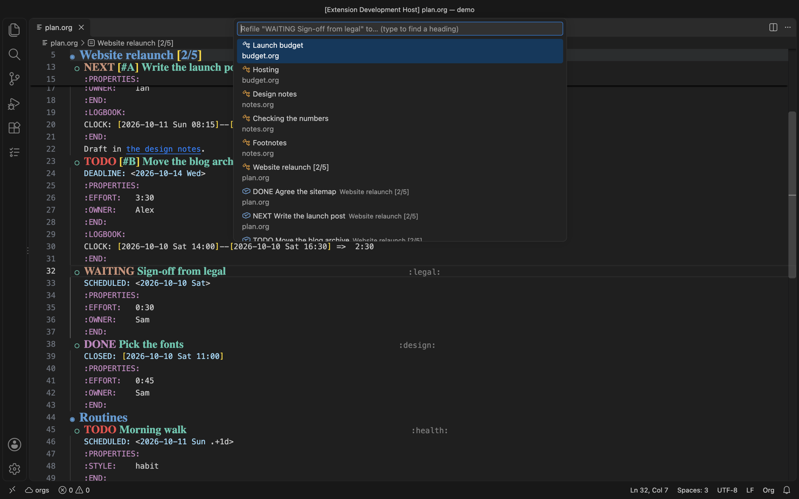
| Key | Does |
|---|---|
| Ctrl+Alt+O W | Refile the subtree under any heading (or a file's top level) |
| Ctrl+Alt+O Shift+W | Copy the subtree there, leaving it where it is too |
| Ctrl+Alt+O A | Archive the subtree |
| Archive All Done: every finished subtree in the file, after asking |
Refile and Copy offer every heading the orgs server can file under - type to find one; each shows the headings above it and its file. Each file's top level is offered too, for filing at its end.
Several at once: select across several headings and Refile, Copy or Archive takes them all (a heading inside another selected one goes with its parent). The server finds them all before it moves any, so nothing is lost to lines moving under it.
Archive sends a subtree where its :ARCHIVE: property, or the file's
#+ARCHIVE: line, says - by default <file>.org_archive - with the time,
its old place and its state noted on it, as org does.
The orgs server does the moving, so the file is saved first; the editor shows the result as soon as the server has written it.
Capture
Capture has as its primary goal of getting it out of your mind now. When you capture you are grabbing a concept and quickly putting it in your inbox for later refiling. Orgs and vscode make this possible through a hybrid approach. Orgs does the capture operation while vscode handles the text input.
The orgs server allows you to define capture targets in its configuration file. These are synced with your vscode settings file automatically. Your vscode settings file then allows you to extend these capture targets with a snippet template to use when filling out one of these captures. These snippets use the normal vscode snippet rules:
As an example, variables should work just fine: VsCode Snippet Rules
Capture targets are stored in the selector section of your vscode capture definition.
"todo": {
"type": "entry",
"snippet": "* ${1:HEADING}\n [$CURRENT_YEAR $CURRENT_MONTH $CURRENT_DATE $CURRENT_HOUR:$CURRENT_MINUTE]\n ${2:BODY}",
"selector": "orgs_capture_target_name",
},Orgs will automatically create entries for all targets is has defined in your settings. This can get in the way if you don't want them but do not want to regenerate them. To fix that use the hide: true field to remove it as an active option for captures in your vscode settings.
Quick capture
Ctrl+Alt+O Q, from anywhere in VS Code: pick a capture template (the one you used last comes first), type one line, Enter. It is filed by the orgs server and you carry on where you were - no capture page opens. Use the full capture (Org: Capture) when you want a body, tags or a snippet.
Capture Targets
Capture targets specify where the new entry should go. They are used for captures, refiles and archiving. Captures targets come in a variety of types.
TARGET TYPES
- file "path/to/file" - Text will be placed at the beginning or end of that file.
- id "id of existing org entry" - Filing as child of this entry, or in the body of the entry.
- customid "customid of existing org entry" - Filing as child of this entry, or in the body of the entry.
- file+headline "filename" "node headline" - Fast configuration if the target heading is unique in the file.
- file+olp "filename" "Level 1 heading" "Level 2" … - For non-unique headings, the full path is safer.
- file+regexp "filename" "regexp to find location" - Use a regular expression to position point.
- file+datetree "filename" root - This target creates a root datetree for today’s date.
- file+olp+datetree "filename" [ "Level 1 heading" …] - This target creates a heading in a date tree for today’s date. If the optional outline path is given, the tree will be built under the node it is pointing to, instead of at top level. Check out the :time-prompt and :tree-type properties below for additional options.
- clock - insert at position of active clock
- hash dynamically assigned hash - during a run of the server nodes are dynamically assigned a hash
Capture Types
Capture come in a variety of types. Types define the type of org mode component you are inserting. The simplest is entry in that your are capturing a full heading and body.
- entry - This is a subnode of whatever the target it pointing at.
- plain - This is plain text added somewhere in the node.
- item - this is a list item added to the end of a list in the target.
- checkitem - this is a checkbox list item added to the end of a checklist in the target (or end of target)
- table-line - This is a line of a table added to whatever table is in the document
Refile
Many organization methodologies have the concept of an inbox and one or more triage stages of the process. Org supports these notions through capture and refile. Once captured you can then, later, place the information where you need it by refiling it. Refiling simply moves the data to a more appropriate location.
The org.refile command will refile the subtree under your cursor to a target of your choosing. Refile targets are determined in one of several ways:
The global option in the orgs configuration file determines the generic search path. This is a list of org files. Here we are searching every org file in our entire org setup for refile targets:
"refileTargets": [".*\\.org"]Archive
Some methodologies make use of the concept of a reference. There are numerous ways of handling a reference. Refiling can be made to support reference material. The other is the use of an archive. Org has 2 ways that you can archive files:
- Placing an ACHIVE tag on a heading or filetags. This removes it from consideration for the agenda amoung other things.
-
Moving the heading from the current file to a refile target. Refile targets are determined programmatically through the use of an #+ARHIVE: comment. This is a filename and heading combination:
#+ARCHIVE: %s_done::* My Heading
This will move from the current file to <currentfile>.org_done under a * My Heading parent heading.
When the filename is omitted, archiving happens in the same file. %s in the filename will be replaced by the current file name (without the directory part). Archiving to a different file is useful to keep archived entries from contributing to the Org-mode Agenda.
The archived entries will be filed as subtrees of the specified headline. When the headline is omitted, the subtrees are simply filed away at the end of the file, as top-level entries. Also in the heading you can use %s to represent the file name, this can be useful when using the same archive for a number of different files.
The default archive behaviour is as follows and can be configured in the Org Yaml file as follows
"archiveDefault": "%s_archive::"New Archive File
If a new archive file is created it will use a template for generating the archive file:
"newFileTemplate": "newfile.tpl"You can configure this to have the file headings you would like in your archive file.
Archive Properties
Archiving will automatically add some standard properties to a heading as it is archived:
file from where the entry came, its outline path the archiving time org-archive-save-context-info Parts of context info that should be stored as properties when archiving. When a subtree is moved to an archive file, it loses information given by context, like inherited tags, the category, and possibly also the TODO state (depending on the variable `org-archive-mark-done'). This variable can be a list of any of the following symbols:
- time The time of archiving.
- file The file where the entry originates.
- ltags The local tags, in the headline of the subtree.
- itags The tags the subtree inherits from further up the hierarchy.
- todo The pre-archive TODO state.
- category The category, taken from file name or #+CATEGORY lines.
- olpath The outline path to the item. These are all headlines above the current item, separated by /, like a file path.
For each symbol present in the list, a property will be created in the archived entry, with a prefix \"ARCHIVE_\", to remember this information."
"archiveSaveContextInfo": ["time", "file"]If true empty properties in the ArchiveSaveContextInfo are not included in the archive output, false all listed properties will be included even if empty.
"archiveSkipEmptyProperties": trueExporting
| Key | Does |
|---|---|
| Ctrl+Alt+O E | Export the file |
| Ctrl+Alt+O Shift+E | Export just the subtree the cursor is in |
Pick a format - only those the orgs server has exporters for are offered - and the result is written next to the org file, with buttons to open it or show it in Finder:
| Format | Writes |
|---|---|
| HTML | notes.html |
notes.pdf (through LaTeX: the server needs pdflatex) |
|
| LaTeX | notes.tex |
| Reveal.js slides | notes-slides.html |
| Impress.js slides | notes-impress.html |
| Markdown | notes.md |
A subtree's file is named after its heading - notes-plans-for-2027.html
- and titled by it, as org's subtree export is; the file's
#+OPTIONS:,
#+HTML_HEAD: and other settings come along.
The exporters are set in the server's yaml (server.exporters). The
exported text comes back to VS Code and is written here, so it works with
a server on another machine - except a subtree's PDF, which the server
writes itself and so needs the server on this machine.
To preview rather than export, see Show Web, Show Reveal JS and the worg Presentation view.
The server's tools
Everything here asks the orgs server, so you need to be logged in to one.
Habits
Habits lists your habits - headings with :STYLE: habit and a repeating
SCHEDULED: - those due today first, each with its last seven days
(● done, ○ missed) and its streak. Pick one to mark it done today:
the repeater moves on and the logbook notes it, as org does. Pick one that
is done today to take it back.
Encryption
Encrypt Heading encrypts the body of the heading the cursor is under;
Decrypt Heading either shows it beside the file (which stays encrypted)
or decrypts it in the file. The server does it with gpg, set up under
crypt: in its yaml: with a key nothing is asked; with a passphrase you
are asked for it, unless the server is holding it unlocked.
Attachments
Attach File (Ctrl+Alt+O Shift+A) attaches files to the heading the
cursor is under, copying them into its attachment folder and giving it an
:ID: if it needs one. Open Attachment lists them, newest first, and
opens the one you pick - from disk when the server is on this machine,
downloaded when it is not.
File history
File History lists the commits that changed the file (if it is in a git repository); pick one to see it side by side with the file as it is now.
New files
New File (Ctrl+Alt+O N) starts a file from one of the server's templates, or empty, in its first org directory unless you give a path, and opens it.
Searching
Search All Files (Ctrl+Alt+O F) searches the text of every org file as you type - a regular expression, case ignored - and shows each match with its file and line. Search This File (Ctrl+Alt+O Shift+F) does the same in the current one. Enter goes to the match.
Markers
Tags can be used like bookmarks. The orgs vscode extension supports the use of exclusive tags like they are a bookmark. You can set the markers list with tags that you want to use in this way.
"markers": ["TODAY"]Once you have set up the markers list you can use the following 2 commands to work with your markers:
- org.setMarker
- org.jumpToMarker
These two commands will remove the tag from any other headings in your org files and set the tag on the heading currently under cursort. They will also let you jump back to this marker as needed.
Reference
Everything the plugin has, listed: every command with what it does and its
keys, and every setting. These are written from the plugin's own
package.json when the manual is built, so they are always complete.
Commands
Every command, by subject. Run any of them from the Command Palette (Ctrl+Shift+P, ⇧⌘P) by its name, or from the org menu (Ctrl+Alt+O M).
Start here
Menu
Every org command in one searchable list, the ones that fit where the cursor is first, each with its key.
- Palette
- Org: Menu
- Id
org.menu- Key
Ctrl+Alt+O M(⌃⌥O Mon macOS) - in an org file
Open A Practice File
Opens a practice org file to try Tab, tables and links on.
- Palette
- Org: Open A Practice File
- Id
org.openPractice
Table Menu
The same menu as Org: Menu (kept for older key bindings).
- Palette
- Org: Table Menu
- Id
org.tableMenu
Outline
Butterfly
M-x butterfly. An xkcd joke; harmless.
- Palette
- Org: Butterfly
- Id
org.butterfly
Cycle Global Visibility
The whole file: top headings only, then every heading, then everything (org's Shift+Tab).
- Palette
- Org: Cycle Global Visibility
- Id
org.globalCycle- Key
Shift+Tab(⇧⇥on macOS) - on a heading
Cycle Visibility
On a heading: fold it, then show its children, then everything under it (org's Tab).
- Palette
- Org: Cycle Visibility
- Id
org.cycle- Key
Tab(⇥on macOS) - on a heading
Demote Heading
Adds a star to this heading only.
- Palette
- Org: Demote Heading
- Id
org.doDemote- Key
Ctrl+Alt+O Shift+D(⌃⌥O ⇧Don macOS) - in an org file
Demote Subtree
Adds a star to the heading and every heading under it.
- Palette
- Org: Demote Subtree
- Id
org.demoteSubtree- Key
Ctrl+Alt+O D(⌃⌥O Don macOS) - in an org file- Key
Alt+Shift+Right(⌥⇧→on macOS) - on a heading- Key
Alt+L(⌥Lon macOS) - in a table, vim normal mode
Do What I Mean
Does the obvious thing: a new heading, checkbox or list item like the one the cursor is on, or follows a link.
- Palette
- Org: Do What I Mean
- Id
org.addDoWhatIMean- Key
Ctrl+Enter(⌃↩on macOS) - in an org file
Insert Heading Respect Content
A new heading at this level, after the current entry's content.
- Palette
- Org: Insert Heading Respect Content
- Id
org.insertHeadingRespectContent- Key
Ctrl+Alt+O H(⌃⌥O Hon macOS) - in an org file
Insert Subheading
A new heading one level down, under the current one.
- Palette
- Org: Insert Subheading
- Id
org.insertSubheading- Key
Ctrl+Alt+O S(⌃⌥O Son macOS) - in an org file
Move Subtree Down
Moves the heading, and everything under it, below the heading after it.
- Palette
- Org: Move Subtree Down
- Id
org.moveSubtreeDown- Key
Alt+Down(⌥↓on macOS) - on a heading- Key
Alt+J(⌥Jon macOS) - in a table, vim normal mode
Move Subtree Up
Moves the heading, and everything under it, above the heading before it.
- Palette
- Org: Move Subtree Up
- Id
org.moveSubtreeUp- Key
Alt+Up(⌥↑on macOS) - on a heading- Key
Alt+K(⌥Kon macOS) - in a table, vim normal mode
Narrow To Subtree
Opens the subtree in a tab of its own; saving it writes it back (org's C-x n s).
- Palette
- Org: Narrow To Subtree
- Id
org.narrowToSubtree- Key
Ctrl+Alt+O Shift+N(⌃⌥O ⇧Non macOS) - in an org file
Promote Heading
Takes a star off this heading only.
- Palette
- Org: Promote Heading
- Id
org.doPromote- Key
Ctrl+Alt+O Shift+P(⌃⌥O ⇧Pon macOS) - in an org file
Promote Subtree
Takes a star off the heading and every heading under it.
- Palette
- Org: Promote Subtree
- Id
org.promoteSubtree- Key
Ctrl+Alt+O P(⌃⌥O Pon macOS) - in an org file- Key
Alt+Shift+Left(⌥⇧←on macOS) - on a heading- Key
Alt+H(⌥Hon macOS) - in a table, vim normal mode
Select Entry
Selects the block or entry the cursor is in.
- Palette
- Org: Select Entry
- Id
org.selectNode
Sort
Sorts what the cursor is in: table rows, a list, or the headings under a heading.
- Palette
- Org: Sort
- Id
org.sort- Key
Ctrl+Alt+O O(⌃⌥O Oon macOS) - in an org file
Toggle Fold
Folds or unfolds the heading or drawer on the cursor's line.
- Palette
- Org: Toggle Fold
- Id
org.tabHandler- Key
Ctrl+Tab(⌃⇥on macOS) - in an org file
Update Statistics Cookies
Works out every [2/5] and [40%] statistics cookie in the file again.
- Palette
- Org: Update Statistics Cookies
- Id
org.updateStatistics
TODOs and tags
Choose TODO Keyword
Picks the heading's TODO keyword from a list.
- Palette
- Org: Choose TODO Keyword
- Id
org.chooseTodo
Insert Tag
Adds a tag to the heading.
- Palette
- Org: Insert Tag
- Id
org.insertTag
Jump To Marker
Goes to the heading carrying a marker tag.
- Palette
- Org: Jump To Marker
- Id
org.jumpToMarker
Next Keyword Or Later Date
Steps the date under the cursor forward a day, or the heading's keyword to the next one.
- Palette
- Org: Next Keyword Or Later Date
- Id
org.incrementContext- Key
Alt+Right(⌥→on macOS) - in an org file
Previous Keyword Or Earlier Date
Steps the date under the cursor back a day, or the heading's keyword to the one before.
- Palette
- Org: Previous Keyword Or Earlier Date
- Id
org.decrementContext- Key
Alt+Left(⌥←on macOS) - in an org file
Set Marker
Puts one of your marker tags (org.markers) on this heading, taking it off any other.
- Palette
- Org: Set Marker
- Id
org.setMarker
Tag As Project
Adds the project tag to the heading.
- Palette
- Org: Tag As Project
- Id
org.insertProjectTag
Tag As Work
Adds the work tag to the heading.
- Palette
- Org: Tag As Work
- Id
org.insertWorkTag
Todo View
Opens one of your org.todoConfigs TODO lists, from the orgs server.
- Palette
- Org: Todo View
- Id
org.chooseTodoView
Lists and checkboxes
Append Numbered List
Adds the next item to a numbered list.
- Palette
- Org: Append Numbered List
- Id
org.appendNumberedList
Insert Checkbox
A new checkbox item under this one.
- Palette
- Org: Insert Checkbox
- Id
org.insertCheckbox
Insert Checkbox Summary
Adds a [n/m] summary to the list's parent.
- Palette
- Org: Insert Checkbox Summary
- Id
org.insertCheckboxSummary
Recalculate All Checkbox Summaries
Works out every checkbox summary in the file again.
- Palette
- Org: Recalculate All Checkbox Summaries
- Id
org.recalcAllCheckboxSummaries
Recalculate Checkbox Summary
Works out the checkbox summary above the cursor again.
- Palette
- Org: Recalculate Checkbox Summary
- Id
org.recalcCheckboxSummary
Toggle Checkbox
Ticks or unticks the checkbox on the line.
- Palette
- Org: Toggle Checkbox
- Id
org.toggleCheckbox
Update Numbered Lists
Numbers the numbered list under the cursor again, from 1.
- Palette
- Org: Update Numbered Lists
- Id
org.updateNumberedList
Properties
Insert Created Property
Adds :CREATED: with the time now to the heading's drawer.
- Palette
- Org: Insert Created Property
- Id
org.insertCreated
Insert Custom ID
Adds a :CUSTOM_ID: made from the title, for #id links.
- Palette
- Org: Insert Custom ID
- Id
org.insertCustomId
Insert ID
Adds an :ID: (a uuid); [[id:...]] links find the heading wherever it moves.
- Palette
- Org: Insert ID
- Id
org.insertId
Insert Logbook Drawer
Adds a :LOGBOOK: drawer to the heading, if it has none.
- Palette
- Org: Insert Logbook Drawer
- Id
org.insertLogbookDrawer
Insert Property
Sets a property in the heading's drawer.
- Palette
- Org: Insert Property
- Id
org.insertProperty
Insert Property Drawer
Adds a :PROPERTIES: drawer to the heading, if it has none.
- Palette
- Org: Insert Property Drawer
- Id
org.insertPropertyDrawer
Update Effort Property
Sets the heading's EFFORT.
- Palette
- Org: Update Effort Property
- Id
org.updateEffortProperty
Markup
Bold
Surrounds the selection with bold markers.
- Palette
- Org: Bold
- Id
org.bold- Key
Ctrl+Alt+O B(⌃⌥O Bon macOS) - in an org file
Code
Surrounds the selection with code markers.
- Palette
- Org: Code
- Id
org.code- Key
Ctrl+Alt+O C(⌃⌥O Con macOS) - in an org file
Fixed Width Line
Turns the line into fixed-width text (": " in front of it).
- Palette
- Org: Fixed Width Line
- Id
org.literal- Key
Ctrl+Alt+O L(⌃⌥O Lon macOS) - in an org file
Italic
Surrounds the selection with italic markers.
- Palette
- Org: Italic
- Id
org.italic- Key
Ctrl+Alt+O I(⌃⌥O Ion macOS) - in an org file
Reformat
Has the orgs server rewrite the file the way org writes it.
- Palette
- Org: Reformat
- Id
org.reformat
Underline
Surrounds the selection with underline markers.
- Palette
- Org: Underline
- Id
org.underline- Key
Ctrl+Alt+O U(⌃⌥O Uon macOS) - in an org file
Verbatim
Surrounds the selection with verbatim markers.
- Palette
- Org: Verbatim
- Id
org.verbose- Key
Ctrl+Alt+O V(⌃⌥O Von macOS) - in an org file
Tables
Align Table
Aligns the table under the cursor.
- Palette
- Org: Align Table
- Id
org.formatUnderCursor- Key
Ctrl+Q Ctrl+F(⌃Q ⌃Fon macOS) - in an org file
Clear Table Cell
Empties the cell.
- Palette
- Org: Clear Table Cell
- Id
org.clearCell- Key
Ctrl+Q Space(⌃Q Spaceon macOS) - in a table
Convert Selection To Table
Turns the selection, or the paragraph, into a table.
- Palette
- Org: Convert Selection To Table
- Id
org.convertToTable
Copy Table Field Down
Copies the cell into the row below (an empty one takes the cell above); numbers count up.
- Palette
- Org: Copy Table Field Down
- Id
org.copyFieldDown- Key
Shift+Enter(⇧↩on macOS) - in a table
Create Table
A new table of the size you ask for.
- Palette
- Org: Create Table
- Id
org.createTable
Delete Table Column
Deletes the column.
- Palette
- Org: Delete Table Column
- Id
org.deleteCol- Key
Alt+Shift+Left(⌥⇧←on macOS) - in a table- Key
Alt+Shift+H(⌥⇧Hon macOS) - in a table, vim normal mode
Delete Table Row
Deletes the row.
- Palette
- Org: Delete Table Row
- Id
org.deleteRow- Key
Alt+Shift+Up(⌥⇧↑on macOS) - in a table- Key
Alt+Shift+K(⌥⇧Kon macOS) - in a table, vim normal mode
Disable Table Mode
Turns the table keys off, so they do what they do outside tables.
- Palette
- Org: Disable Table Mode
- Id
org.tableModeOff- Key
Ctrl+Q Ctrl+Q(⌃Q ⌃Qon macOS) - in a table
Edit Table Formula
Writes, changes or removes the formula for the cell under the cursor.
- Palette
- Org: Edit Table Formula
- Id
org.editTableFormula- Key
Ctrl+Alt+O =(⌃⌥O =on macOS) - in an org file
Enable Table Mode
Turns the table keys (Tab, Enter, Alt+arrows) back on.
- Palette
- Org: Enable Table Mode
- Id
org.tableModeOn- Key
Ctrl+Q Ctrl+Q(⌃Q ⌃Qon macOS) - in an org file
Go To Table
Goes to any table the orgs server knows.
- Palette
- Org: Go To Table
- Id
org.gotoTable
Import CSV As Table
Reads a csv or tsv file into a table.
- Palette
- Org: Import CSV As Table
- Id
org.importTable
Insert Random Table Row
Inserts a random row of a named table.
- Palette
- Org: Insert Random Table Row
- Id
org.randomTableRow
Insert Table Column Left
A new column to the left.
- Palette
- Org: Insert Table Column Left
- Id
org.addColLeft
Insert Table Column Right
A new column to the right.
- Palette
- Org: Insert Table Column Right
- Id
org.addColRight- Key
Alt+Shift+Right(⌥⇧→on macOS) - in a table- Key
Alt+Shift+L(⌥⇧Lon macOS) - in a table, vim normal mode
Insert Table Name
Inserts the #+NAME: of a table, for remote().
- Palette
- Org: Insert Table Name
- Id
org.insertTableName
Insert Table Row Above
A new row above.
- Palette
- Org: Insert Table Row Above
- Id
org.addRowUp
Insert Table Row Below
A new row below.
- Palette
- Org: Insert Table Row Below
- Id
org.addRowDown- Key
Alt+Shift+Down(⌥⇧↓on macOS) - in a table- Key
Alt+Shift+J(⌥⇧Jon macOS) - in a table, vim normal mode
Insert Table Rule
A rule (|—+—|) under the row.
- Palette
- Org: Insert Table Rule
- Id
org.insertSeparator- Key
Ctrl+-(⌃-on macOS) - in a table
Insert Table Rule And Move Below
A rule under the row, and on to the row below it.
- Palette
- Org: Insert Table Rule And Move Below
- Id
org.insertSeparatorAndMove- Key
Ctrl+Alt+O Enter(⌃⌥O ↩on macOS) - in a table
Join Table Row Below
Joins the row below onto this one, cell by cell.
- Palette
- Org: Join Table Row Below
- Id
org.joinRows
Move Table Column Left
Swaps the column with the one to its left.
- Palette
- Org: Move Table Column Left
- Id
org.moveColLeft- Key
Alt+Left(⌥←on macOS) - in a table- Key
Alt+H(⌥Hon macOS) - in a table, vim normal mode
Move Table Column Right
Swaps the column with the one to its right.
- Palette
- Org: Move Table Column Right
- Id
org.moveColRight- Key
Alt+Right(⌥→on macOS) - in a table- Key
Alt+L(⌥Lon macOS) - in a table, vim normal mode
Move Table Row Down
Swaps the row with the one below.
- Palette
- Org: Move Table Row Down
- Id
org.moveRowDown- Key
Alt+Down(⌥↓on macOS) - in a table- Key
Alt+J(⌥Jon macOS) - in a table, vim normal mode
Move Table Row Up
Swaps the row with the one above.
- Palette
- Org: Move Table Row Up
- Id
org.moveRowUp- Key
Alt+Up(⌥↑on macOS) - in a table- Key
Alt+K(⌥Kon macOS) - in a table, vim normal mode
Paste As Table
Pastes the clipboard's csv or tab separated text as a table.
- Palette
- Org: Paste As Table
- Id
org.pasteAsTable
Plot Table
Charts the table beside the editor, following #+PLOT:.
- Palette
- Org: Plot Table
- Id
org.plotTable- Key
Ctrl+Alt+O G(⌃⌥O Gon macOS) - in an org file
Recalculate All Tables In File
Recalculates every table with formulas in the file.
- Palette
- Org: Recalculate All Tables In File
- Id
org.execAllTables- Key
Ctrl+Alt+O Shift+R(⌃⌥O ⇧Ron macOS) - in an org file
Recalculate Table
Recalculates the table's #+TBLFM: formulas (through the orgs server).
- Palette
- Org: Recalculate Table
- Id
org.execTable
Set Up Vim Table Keys
Adds <leader>t… mappings for the table commands to VSCodeVim.
- Palette
- Org: Set Up Vim Table Keys
- Id
org.setupVimTableKeys
Sort Table Rows
Sorts the rows between rules by the cursor's column.
- Palette
- Org: Sort Table Rows
- Id
org.sortTable
Split Table Cell Onto New Row
Moves the text after the cursor into a new row below.
- Palette
- Org: Split Table Cell Onto New Row
- Id
org.splitCell
Sum Table Column
Adds up the column and copies the total.
- Palette
- Org: Sum Table Column
- Id
org.sumTableColumn
Table Next Cell
Aligns the table and goes to the next cell, making a row past the last one.
- Palette
- Org: Table Next Cell
- Id
org.gotoNextCell- Key
Tab(⇥on macOS) - in a table
Table Next Row
Goes down a row in the same column, making a row at the end or over a rule.
- Palette
- Org: Table Next Row
- Id
org.nextRow- Key
Enter(↩on macOS) - in a table
Table Previous Cell
Aligns the table and goes to the previous cell.
- Palette
- Org: Table Previous Cell
- Id
org.gotoPreviousCell- Key
Shift+Tab(⇧⇥on macOS) - in a table
Transpose Table
Turns rows into columns.
- Palette
- Org: Transpose Table
- Id
org.transposeTable
Links
Insert Link
Inserts a link to any heading in the workspace, a file or a web address.
- Palette
- Org: Insert Link
- Id
org.insertLink- Key
Ctrl+Alt+O K(⌃⌥O Kon macOS) - in an org file
Open Link
Follows the link under the cursor (urls in the browser).
- Palette
- Org: Open Link
- Id
org.openLink- Key
Ctrl+Alt+O Shift+O(⌃⌥O ⇧Oon macOS) - in an org file
Show Backlinks
Every link to the heading the cursor is under.
- Palette
- Org: Show Backlinks
- Id
org.showBacklinks
Store Link
Remembers the heading you are under, to link to with Insert Link.
- Palette
- Org: Store Link
- Id
org.storeLink- Key
Ctrl+Alt+O Shift+K(⌃⌥O ⇧Kon macOS) - in an org file
Footnotes
Insert Footnote
Inserts the next numbered footnote and takes you to write it; on a footnote, goes between it and its note.
- Palette
- Org: Insert Footnote
- Id
org.insertFootnote- Key
Ctrl+Alt+O Ctrl+F(⌃⌥O ⌃Fon macOS) - in an org file
Dates and the clock
Clock In
Starts the clock on the heading the cursor is under.
- Palette
- Org: Clock In
- Id
org.clockin- Key
Ctrl+Alt+O Ctrl+I(⌃⌥O ⌃Ion macOS) - in an org file
Clock Out
Stops the clock.
- Palette
- Org: Clock Out
- Id
org.clockout- Key
Ctrl+Alt+O Ctrl+O(⌃⌥O ⌃Oon macOS) - in an org file
Go To Heading
Goes to a heading from the Clock view.
- Palette
- Org Clock: Go To Heading
- Id
org.clock.open
Go To Running Clock
Goes to the heading the clock is running on.
- Palette
- Org: Go To Running Clock
- Id
org.jumpToClock- Key
Ctrl+Alt+O J(⌃⌥O Jon macOS) - anywhere in vs code
Insert Timestamp
A menu of timestamps: today or now, active or inactive, or from the calendar.
- Palette
- Org: Insert Timestamp
- Id
org.insertTimestamp- Key
Ctrl+Alt+O .(⌃⌥O .on macOS) - in an org file
Is The Clock Running?
Says whether the clock is running, and on what.
- Palette
- Org: Is The Clock Running?
- Id
org.clockactive
Next Day Page
Opens the day page after this one.
- Palette
- Org: Next Day Page
- Id
org.nextDayPage
Pick A Timestamp
A timestamp picked from the calendar.
- Palette
- Org: Pick A Timestamp
- Id
org.timestampNode
Previous Day Page
Opens the day page before this one.
- Palette
- Org: Previous Day Page
- Id
org.prevDayPage
Refresh
Refreshes the Clock view.
- Palette
- Org Clock: Refresh
- Id
org.clock.refresh
Schedule
SCHEDULED: on the heading, picked from the calendar.
- Palette
- Org: Schedule
- Id
org.scheduleNode
Set Deadline
DEADLINE: on the heading, picked from the calendar.
- Palette
- Org: Set Deadline
- Id
org.deadlineNode
Start Timer
A pomodoro or a timer of your own in the status bar; clocks in on the heading.
- Palette
- Org: Start Timer
- Id
org.startTimer- Key
Ctrl+Alt+O Shift+T(⌃⌥O ⇧Ton macOS) - anywhere in vs code
Stop Timer
Stops the timer (and the clock it started).
- Palette
- Org: Stop Timer
- Id
org.stopTimer
Timer
Pause, add time to or stop the running timer.
- Palette
- Org: Timer
- Id
org.timerMenu
Timestamp
Inserts today's date.
- Palette
- Org: Timestamp
- Id
org.timestamp- Key
Ctrl+Alt+O T(⌃⌥O Ton macOS) - in an org file
Today's Day Page
Opens today's day page, making it if need be.
- Palette
- Org: Today's Day Page
- Id
org.showDayPageToday
Update All Clock Totals
Works out every CLOCK: line's total in the file again.
- Palette
- Org: Update All Clock Totals
- Id
org.updateAllClocks
Update Clock Total On This Line
Works out the total of the CLOCK: line under the cursor again.
- Palette
- Org: Update Clock Total On This Line
- Id
org.updateclock- Key
Ctrl+Alt+O Ctrl+U(⌃⌥O ⌃Uon macOS) - in an org file
Running code
Execute Block
Runs the block at the cursor (the same as Run At Cursor).
- Palette
- Org: Execute Block
- Id
org.execBlock
Run All Blocks In File
Runs every source block, call and inline code in the file.
- Palette
- Org: Run All Blocks In File
- Id
org.runAllBlocks
Run At Cursor
Runs what is at the cursor: a table's formulas, a source block, a #+CALL:, inline code or a dynamic block.
- Palette
- Org: Run At Cursor
- Id
org.run- Key
Ctrl+Alt+O R(⌃⌥O Ron macOS) - in an org file
Tangle File
Writes out the blocks with a :tangle header.
- Palette
- Org: Tangle File
- Id
org.tangle
Update All Dynamic Blocks
Refreshes every #+BEGIN: dynamic block in the file.
- Palette
- Org: Update All Dynamic Blocks
- Id
org.updateAllDynamicBlocks
Refile and archive
Archive All Done
Archives every finished subtree in the file, after asking.
- Palette
- Org: Archive All Done
- Id
org.archiveAllDone
Archive Subtree
Sends the subtree to its archive.
- Palette
- Org: Archive Subtree
- Id
org.archive- Key
Ctrl+Alt+O A(⌃⌥O Aon macOS) - in an org file
Copy Subtree To
Copies the subtree under any heading, leaving it where it is too.
- Palette
- Org: Copy Subtree To
- Id
org.copySubtree- Key
Ctrl+Alt+O Shift+W(⌃⌥O ⇧Won macOS) - in an org file
Create Jira
Makes a Jira ticket from the heading (if the server has Jira set up).
- Palette
- Org: Create Jira
- Id
org.createJira
Refile Subtree
Moves the subtree (or the selected ones) under any heading.
- Palette
- Org: Refile Subtree
- Id
org.refile- Key
Ctrl+Alt+O W(⌃⌥O Won macOS) - in an org file
Capture
Capture
Opens a capture page for one of your templates.
- Palette
- Org: Capture
- Id
org.capture
Quick Capture
Captures one line from anywhere, through a server template.
- Palette
- Org: Quick Capture
- Id
org.quickCapture- Key
Ctrl+Alt+O Q(⌃⌥O Qon macOS) - anywhere in vs code
Agenda
Change State…
Changes an agenda entry's keyword.
- Palette
- Org Agenda: Change State…
- Id
org.agenda.state
Clock In
Clocks in on an agenda entry.
- Palette
- Org Agenda: Clock In
- Id
org.agenda.clockIn
Go To Entry
Goes to an agenda entry.
- Palette
- Org Agenda: Go To Entry
- Id
org.agenda.open
Mark Done
Marks an agenda entry done.
- Palette
- Org Agenda: Mark Done
- Id
org.agenda.done
Refresh
Refreshes the side bar agenda.
- Palette
- Org Agenda: Refresh
- Id
org.agenda.refresh
Reschedule…
Schedules an agenda entry for another day.
- Palette
- Org Agenda: Reschedule…
- Id
org.agenda.reschedule
Set Effort…
Sets an agenda entry's effort.
- Palette
- Org Agenda: Set Effort…
- Id
org.agenda.effort
Set Priority…
Sets an agenda entry's priority.
- Palette
- Org Agenda: Set Priority…
- Id
org.agenda.priority
Show Agenda
Opens worg's agenda (or the classic one, with org.agendaView).
- Palette
- Org: Show Agenda
- Id
org.showAgenda
Export and preview
Export File
Exports the file as html, pdf, LaTeX, slides or markdown, next to it.
- Palette
- Org: Export File
- Id
org.export- Key
Ctrl+Alt+O E(⌃⌥O Eon macOS) - in an org file
Export Subtree
Exports just the subtree the cursor is in.
- Palette
- Org: Export Subtree
- Id
org.exportSubtree- Key
Ctrl+Alt+O Shift+E(⌃⌥O ⇧Eon macOS) - in an org file
Org: Show LaTeX
Opens the file's LaTeX beside it.
- Palette
- Org: Org: Show LaTeX
- Id
org.latexExport
Show Gantt (Classic)
A Gantt chart of the headings a query finds.
- Palette
- Org: Show Gantt (Classic)
- Id
org.showGantt
Show Impress JS
Previews the file as Impress.js slides.
- Palette
- Org: Show Impress JS
- Id
org.showImpress
Show Mind Map (Classic)
A mind map of the headings a query finds.
- Palette
- Org: Show Mind Map (Classic)
- Id
org.showMindMap
Show Reveal JS
Previews the file as Reveal.js slides.
- Palette
- Org: Show Reveal JS
- Id
org.showReveal
Show Web
Previews the file as a web page, following the file you are in.
- Palette
- Org: Show Web
- Id
org.showWeb
Panels
Column View
The file's headings and their properties as an editable table, with totals.
- Palette
- Org: Column View
- Id
org.columnView- Key
Ctrl+Alt+O Shift+C(⌃⌥O ⇧Con macOS) - in an org file
Show Pictures And Maths
The pictures and LaTeX in the subtree you are in, drawn beside the editor.
- Palette
- Org: Show Pictures And Maths
- Id
org.showMediaPanel
The server's tools
Attach File
Attaches files to the heading.
- Palette
- Org: Attach File
- Id
org.attachFile- Key
Ctrl+Alt+O Shift+A(⌃⌥O ⇧Aon macOS) - in an org file
Decrypt Heading
Shows, or decrypts in the file, an encrypted heading.
- Palette
- Org: Decrypt Heading
- Id
org.decryptHeading
Encrypt Heading
Encrypts the heading's body with gpg.
- Palette
- Org: Encrypt Heading
- Id
org.encryptHeading
File History
Compares the file with an earlier commit.
- Palette
- Org: File History
- Id
org.fileHistory
Habits
Your habits, due ones first; pick one to mark it done today, or take it back.
- Palette
- Org: Habits
- Id
org.habits
New File
Starts a new org file, from a template if you like.
- Palette
- Org: New File
- Id
org.newFile- Key
Ctrl+Alt+O N(⌃⌥O Non macOS) - anywhere in vs code
Open Attachment
Opens one of the heading's attachments.
- Palette
- Org: Open Attachment
- Id
org.openAttachment
Search All Files
Searches the text of every org file as you type.
- Palette
- Org: Search All Files
- Id
org.searchFiles- Key
Ctrl+Alt+O F(⌃⌥O Fon macOS) - anywhere in vs code
Search This File
Searches the text of this file as you type.
- Palette
- Org: Search This File
- Id
org.searchThisFile- Key
Ctrl+Alt+O Shift+F(⌃⌥O ⇧Fon macOS) - in an org file
Worg views
Show Clock Report
Worg's clock report.
- Palette
- Org: Show Clock Report
- Id
org.showWorgClockReport
Show Code
Worg's code view.
- Palette
- Org: Show Code
- Id
org.showWorgCode
Show Collections
Worg's record collections.
- Palette
- Org: Show Collections
- Id
org.showWorgCollections
Show Column View
Worg's column view.
- Palette
- Org: Show Column View
- Id
org.showWorgColumns
Show Contacts
Worg's contacts.
- Palette
- Org: Show Contacts
- Id
org.showWorgContacts
Show Diff & History
Worg's diff and history view.
- Palette
- Org: Show Diff & History
- Id
org.showWorgDiff
Show Files
Worg's files view and editor.
- Palette
- Org: Show Files
- Id
org.showWorgFiles
Show Flashcards
Worg's flashcards.
- Palette
- Org: Show Flashcards
- Id
org.showWorgDrill
Show Gantt Chart
Worg's Gantt chart.
- Palette
- Org: Show Gantt Chart
- Id
org.showWorgGanttChart
Show Kanban
Worg's kanban board.
- Palette
- Org: Show Kanban
- Id
org.showWorgKanban
Show Links
Worg's link graph.
- Palette
- Org: Show Links
- Id
org.showWorgLinks
Show Mind Map
Worg's mind map.
- Palette
- Org: Show Mind Map
- Id
org.showWorgMindMap
Show Presentation
Worg's presentation view.
- Palette
- Org: Show Presentation
- Id
org.showWorgPresentation
Show Saved Queries
Worg's saved queries.
- Palette
- Org: Show Saved Queries
- Id
org.showWorgStoredQueries
Show Search
Worg's search view.
- Palette
- Org: Show Search
- Id
org.showWorgSearch
Show Starmap
Worg's starmap.
- Palette
- Org: Show Starmap
- Id
org.showWorgStarmap
Show Tables
Worg's tables view.
- Palette
- Org: Show Tables
- Id
org.showWorgTables
Show Voice Notes
Worg's voice notes.
- Palette
- Org: Show Voice Notes
- Id
org.showWorgVoiceNotes
Connection
Connect To Orgs
Checks that the orgs server answers.
- Palette
- Org: Connect To Orgs
- Id
org.connectToOrgs
Login
Logs in to the orgs server.
- Palette
- Org: Login
- Id
org.login
Logout
Logs out of the orgs server.
- Palette
- Org: Logout
- Id
org.logout
Server Connection
Log in or out, check the server, open worg or change its address.
- Palette
- Org: Server Connection
- Id
org.connectionMenu
Settings
Every setting, in Settings (Ctrl+, / ⌘,) under Org, or in settings.json by the name given.
activeFormulaIndicator
The indicator box to use when moving around within a table
- Setting
org.activeFormulaIndicator- Type
- object
- Default
{
"light": {
"textDecoration": "bold;",
"border": "1px dashed black"
},
"dark": {
"textDecoration": "bold;",
"border": "1px dashed cyan"
}
}addLeftZero
Add left zero to single-digit dates and months.
- Setting
org.addLeftZero- Type
- boolean
- Default
false
agendaDays
How many days, from today, the Agenda in the side bar shows.
- Setting
org.agendaDays- Type
- number
- Default
7
agendaView
Which agenda Org: Show Agenda opens: worg's, or the older built-in one.
- Setting
org.agendaView- Type
- string
- Default
"worg"- Values
worg;classic
allowSelfSigned
Allow self signed https certificates on your org server, this is NOT safe
- Setting
org.allowSelfSigned- Type
- boolean
- Default
false
autoStatistics
Keep [2/5] and [40%] statistics cookies on headings up to date as keywords and checkboxes change.
- Setting
org.autoStatistics- Type
- boolean
- Default
true
blockCodeLens
Show Run above source blocks and #+CALL: lines, Update above dynamic blocks, and Recalculate on #+TBLFM: lines.
- Setting
org.blockCodeLens- Type
- boolean
- Default
true
bullets
Bullets to use in pretty formatting of headings.
- Setting
org.bullets- Type
- array
- Default
["◉","○","◇","◆","●","•","♦"]
captureTemplates
Capture templates to use for capture types.
- Setting
org.captureTemplates- Type
- object
- Default
{"todo":{"type":"entry","snippet":"* ${1:HEADING}\n ${2:BODY}"}}
clockInOutSeparator
Clock in and clock out separator
- Setting
org.clockInOutSeparator- Type
- string
- Default
"--"
clockTotalSeparator
Clock total separator
- Setting
org.clockTotalSeparator- Type
- string
- Default
" => "
decorateBullets
Should headings have pretty bullets?
- Setting
org.decorateBullets- Type
- boolean
- Default
true
decorateLinks
Should links be collapsed to pretty format?
- Setting
org.decorateLinks- Type
- boolean
- Default
true
doneKeywords
Specifies the types of DONE statuses available (for switching).
- Setting
org.doneKeywords- Type
- array
- Default
["DONE"]
gantts
Named gantt heading querries
- Setting
org.gantts- Type
- object
- Default
{"default":"HasProperty(\"EFFORT\")"}
headingFormatting
Styles setting per heading level, up to 8
- Setting
org.headingFormatting- Type
- array
- Default
[
{
"font-size": "23px",
"font-weight": "bold",
"font-family": "\"Century Gothic\""
},
{
"font-size": "20px",
"font-weight": "bold",
"font-family": "\"Ink Free\""
},
{
"font-size": "18px",
"font-weight": "bold"
},
{
"font-size": "18px",
"font-style": "italic"
},
{
"font-size": "18px",
"font-style": "italic"
},
{},
{},
{}
]highlight
List of regex based decorators can be useful for adding visual interest to your docs
- Setting
org.highlight- Type
- object
- Default
{
"decorations": {
"rangeBehavior": 3
},
"regexFlags": "gi",
"minDelay": 50,
"maxMatches": 250,
"regexes": {
"(?<=\\|\\s+)(PASSED)(?=\\s+\\|)": {
"filterFileRegex": ".*\\.org$",
"decorations": [
{
"overviewRulerColor": "#ffcc00",
"backgroundColor": "#00cc00",
"borderRadius": "4px",
"borderSpacing": "5px",
"color": "#ffffff",
"fontWeight": "bold",
"border": "1px dotted white"
}
]
},
"(?<=\\|\\s+)(FAILED)(?=\\s+\\|)": {
"filterFileRegex": ".*\\.org$",
"decorations": [
{
"backgroundColor": "#cc0000",
"borderRadius": "4px",
"borderSpacing": "5px",
"color": "#ffffff",
"fontWeight": "bold",
"border": "1px dotted white"
}
]
},
"(?<=\\|\\s+)([$]?\\s*[-]\\s*\\d*\\.?\\d+)(?=\\s+\\|)": {
"filterFileRegex": ".*\\.org$",
"decorations": [
{
"color": "#ffaaaa"
}
]
}
}
}linkColoring
What color should links be colored when prettied up?
- Setting
org.linkColoring- Type
- string
- Default
"rgba(0, 128, 255, 1.0)"
orgsConnection
orgs server connection
- Setting
org.orgsConnection- Type
- string
- Default
"https://localhost:443"
pomodoroClocks
A timer started under a heading clocks in on it, and out again when it ends.
- Setting
org.pomodoroClocks- Type
- boolean
- Default
true
selectedCellIndicator
The indicator box to use when moving around within a table
- Setting
org.selectedCellIndicator- Type
- object
- Default
{
"light": {
"textDecoration": "bold;",
"border": "1px dashed black"
},
"dark": {
"textDecoration": "bold;",
"border": "1px dashed green"
}
}serverPathMap
When the orgs server is on another machine: server path prefix -> local path prefix, used to open headings clicked in a worg view.
- Setting
org.serverPathMap- Type
- object
- Default
{}
tableAutoRecalc
When moving about a table recalculates it. Needs the orgs server and a login.
- Setting
org.tableAutoRecalc- Type
- string
- Default
"marked"- Values
marked- Recalculate when leaving a row marked with # in the first column, as org does;always- Recalculate whenever Tab or Enter leaves a cell of a table with formulas;off- Only recalculate when asked
tableRecalcOnSave
Recalculate every table with formulas when an org file is saved. Needs the orgs server and a login.
- Setting
org.tableRecalcOnSave- Type
- boolean
- Default
false
tagOffset
How far (characters) out should tags be indented on a headline?
- Setting
org.tagOffset- Type
- integer
- Default
65
targetCellIndicator
The indicator box to use when moving around within a table
- Setting
org.targetCellIndicator- Type
- object
- Default
{
"light": {
"textDecoration": "bold;",
"border": "1px dashed black"
},
"dark": {
"textDecoration": "bold;",
"border": "1px dashed purple"
}
}todoConfigs
Defines TODO list views you would like to query from the orgs server and how to display them
- Setting
org.todoConfigs- Type
- object
- Default
{"todos":{"query":"","display":{"filename":15,"status":10,"headline":25,"properties":{"EFFORT":5}}}}
todoKeywords
Specifies the types of TODO statuses available (for switching).
- Setting
org.todoKeywords- Type
- array
- Default
["TODO"]
underlineTopHeading
Top level headings get an underline.
- Setting
org.underlineTopHeading- Type
- boolean
- Default
true
updateInterval
Interval to update a buffers parsing.
- Setting
org.updateInterval- Type
- integer
- Default
10000
worgUrl
Where the worg views are loaded from. Empty uses org.orgsConnection. Use the server's http address if its https certificate is self-signed - a webview will not load it.
- Setting
org.worgUrl- Type
- string
- Default
""
Developers
How the plugin is put together, for anybody changing it. The sections after
this one are written in the code itself, beside what they describe, as
SDOC comment blocks.
Building, testing, and this manual
npm install
npm run compile # TypeScript into out/
npm run lint # ESLint
npm run test:unit # the model tests, in node
npm test # and the extension tests, in a VS Code
tools/docs/build.sh # this manual: docs/iorg.org and docs/iorg.html
tools/docs/build.sh --screenshots # ...taking the screenshots again
The manual is built with docex from the orgs repository (expected beside
this one, at ../orgs, or wherever ORGS_DIR says). It reads three things:
- the guides in
docs/guide/- each names its place with#+DOC_ORDER:(and#+DOC_SECTION:to sit inside another); -
SDOCblocks in the TypeScript sources, written like this, which file under Developers:/* SDOC: Developers * The tables model What it is for... EDOC */
- the key, command and setting references, which
tools/docs/reference.jswrites frompackage.jsonandtools/docs/command-notes.json(one line about each command - add one when you add a command).
The screenshots are taken by tools/docs/screenshots.js: it opens VS Code
on a demo workspace (tools/docs/demo/) with an orgs server behind it,
plays the scenes in tools/docs/scenes.js, and captures each through the
Chrome DevTools Protocol.
The shape of the code
The newer code keeps each feature's logic in a model with no vscode in it, tested in plain node, under a thin layer that talks to the editor:
| Model | Editor side |
|---|---|
src/tables/model.ts |
src/tables/commands.ts, view.ts, calc.ts, plot.ts |
src/tables/formulas.ts |
(formula targets, for the highlight and the editor) |
src/outline/model.ts |
src/outline/commands.ts, refile.ts, stats.ts |
src/links/model.ts |
src/links/providers.ts |
src/decorations-scan.ts |
src/decorations.ts |
src/columns-model.ts |
src/columns.ts |
src/footnotes-model.ts |
src/footnotes.ts |
src/lines.ts |
src/edit-lines.ts (one minimal edit per change) |
Everything that needs the orgs server goes through src/db.ts (ODb);
src/auth.ts logs in, or notices a server that needs no login.
Decorations
The pretty-printing - link markup hidden, a heading's stars shown as one
bullet, headings styled, source blocks shaded - is drawn from one pass
over the lines (decorations-scan.ts scanLines), a moment after typing
stops (OrgExtension.update). Each decoration type is made once, in the
constructor, and disposed with the extension; nothing is created per
update.
Links in the editor
Following a link is VS Code's Go to Definition (LinkDefinitions),
backlinks are its Find References (Backlinks), so F12, Shift+F12 and
vim's gd / gr work with nothing bound. resolve turns a target into a
place: this file for *heading, #custom-id and <<target>>; the file
for file: links and their :: searches; the workspace, then the orgs
server (GET /id/), for id:. ClickableLinks makes them Ctrl+clickable
through a command: uri; LinkHover previews images and headings.
Logging in, or not
Auth holds the token from a login and refreshes it before it runs out.
probe() asks the server, with no token, whether it answers: open (a
noAuth: true server - no login needed), closed, or unreachable.
isLoggedIn() is true for a valid token or an open server, so everything
that waits for a login works against a noAuth server; onAccessChanged
tells the status bar (connection.ts).
Narrowing
org-narrow: is a small file system (NarrowFs): reading a narrowed uri
gives the subtree's lines from its source document, found by the heading
line it started at (or, if that moved, by its text); writing replaces
those lines with a WorkspaceEdit and saves the source. Changes to the
source fire a change event for its narrowed views, so they reload.
Previews
One panel per kind (web, reveal, impress, gantt, mind map), filled from
the server's exporters (ODb.exportText). The page gets a small script
first (SHIM): acquireVsCodeApi once (pages from the server may ask for
it again), the scroll position kept in the webview state across redraws,
and s to save. Redrawn on save, not on a timer.
Recalculating tables
Formulas are worked out by the orgs server, but from the editor's text:
calculate sends the table and its #+TBLFM: lines to POST /table/calc,
which writes nothing and answers with the table as it reads afterwards
(and any colours highlight() and friends gave cells). The answer is put
back as one edit, so a recalculation is one undo and needs no save; if
the document changed while the server was thinking, the answer is
dropped.
Colours are kept per document against the formatted text of the table they belong to; a table that no longer reads that way has lost them.
The outline model
Headings, subtrees and the edits on them, as plain functions over an
array of lines: parseHeading (keyword, priority, title, tags),
headingAt, subtreeEnd, children, moveSubtree, sortChildren,
sortList, setProperty / removeProperty, setHeadingParts,
cycleKeyword, updateCookies, findOlp / olpOf. Each edit returns
the block of lines it rewrites, which replaceLines puts back with a
minimal edit.
Keywords are passed in: fileKeywords reads a file's own #+TODO:
line, and COMMON_KEYWORDS is used where neither the file nor the
settings are to hand.
The table model
OrgTable is a table as rows of cells (a rule is a row with no cells),
parsed from lines with OrgTable.parse and written back aligned with
format(measure). Every table command is: find the table
(tables/editor.ts tableAt), change the model, write it back - which
goes through diffLines, so only what changed is touched and it is one
undo.
- Alignment follows org: a column that is more than half numbers
(
isNumber, org's number pattern plus currency and thousands separators) is right-aligned; a cookie row (<l>,<r>,<c>,<N>) overrides that, and<N>is shown N wide bytables/view.ts. measureis how wide a cell looks:measureWith(prettyLinks)counts a link as its description, and wide east asian characters as two.- The cursor is placed by
cellTextStartand found bycellIndexAt, which read the line as it is - so a table typed by hand, not yet aligned, works.
Waiting for the server's writes
Many commands ask the orgs server to change a file (refile, archive,
clock, run a block). VS Code notices the change on disk in its own time.
settled(files) waits until every open, unmodified copy of those files
reads as the disk does, so the next command - or keystroke - sees the new
text. Commands that make the server write call it before they return.
readLines reads a file for looking across files: the editor's copy if
it is open (unsaved changes and all), the disk otherwise, cached on mtime.
Writing back with minimal edits
replaceLines(editor, start, end, lines) rewrites a block of a document
with the single smallest edit (diffLines in lines.ts): common lines
and the common start and end of a changed line are left alone. That keeps
undo to one step, and leaves the cursor, markers and VSCodeVim's idea of
where things are undisturbed wherever nothing moved - writing a whole
table back used to move the cursor twice and confuse vim.